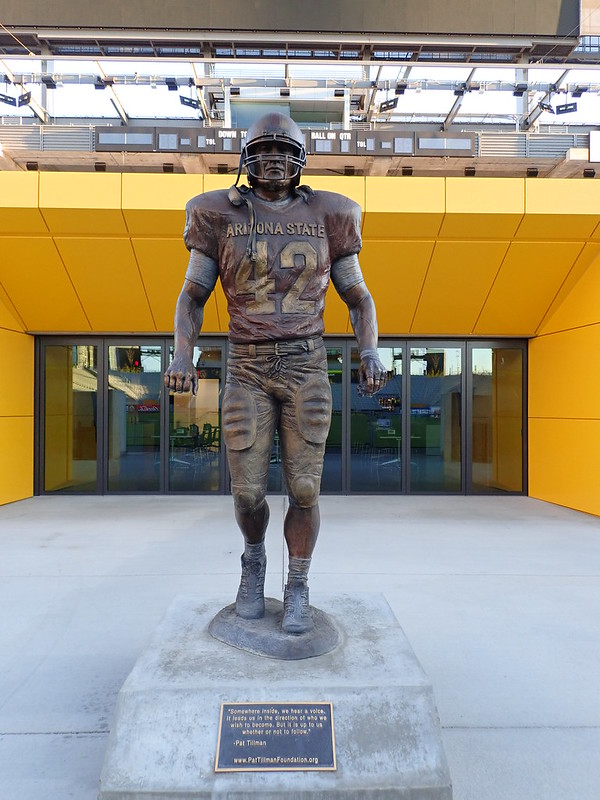

Last updated: August 23, 2024
Frequently Asked Questions
- What is the purpose of the Patriot's Pursuit: A Tribute to Pat Tillman charity event?
- How can I participate in the memorial walk/run?
- Do I need to be a skilled runner to participate in the memorial walk/run?
- Can I make a donation without participating in the event?
- Are there sponsorship opportunities available?
- Where do the proceeds from the event go?
- Is the event open to all ages?
- Can I bring my pet to the event?
- Is there a deadline for fundraising contributions?
- Are there volunteer opportunities available?
- Can I purchase event merchandise onsite?
- Will there be food and refreshments available?
- What COVID-19 safety measures are in place?
- Can I register on the day of the event?
- Are there discounted registration fees for military personnel and veterans?
What is the purpose of the Patriot's Pursuit: A Tribute to Pat Tillman charity event?
The event aims to honor the legacy of Pat Tillman, a former NFL player and Army Ranger, by raising awareness and funds for causes such as supporting military veterans, education, and community programs.
How can I participate in the memorial walk/run?
To participate in the memorial walk/run, simply register for the event on our website. Details about the route, timing, and other relevant information will be provided upon registration.
Do I need to be a skilled runner to participate in the memorial walk/run?
Not at all! The memorial walk/run is designed to accommodate participants of all fitness levels. Whether you prefer walking or running, the important thing is to join us in honoring Pat Tillman's journey.
Can I make a donation without participating in the event?
Absolutely! We welcome and appreciate any donations to support the causes championed by Pat Tillman. Visit our donation page to contribute.
Are there sponsorship opportunities available?
Yes, we offer various sponsorship packages for businesses and individuals. Please contact our sponsorship team for more information on how you can support the Patriot's Pursuit: A Tribute to Pat Tillman event.
Where do the proceeds from the event go?
All proceeds from the Patriot's Pursuit: A Tribute to Pat Tillman charity event are directed towards charitable initiatives, including supporting military veterans, educational programs, and community projects that align with Pat Tillman's values.
Is the event open to all ages?
Yes, Patriot's Pursuit: A Tribute to Pat Tillman is a family-friendly event, and participants of all ages are welcome.
Can I bring my pet to the event?
While we love our furry friends, for the safety and comfort of all participants, we kindly request that you leave pets at home.
Is there a deadline for fundraising contributions?
Fundraising contributions are encouraged leading up to and during the event. However, for inclusion in certain recognitions, please ensure that all contributions are submitted by September 20, 2024.
Are there volunteer opportunities available?
Absolutely! We welcome volunteers to assist with various aspects of the event, from registration to event logistics. If you're interested in volunteering, please contact our volunteer coordinator.
Can I purchase event merchandise onsite?
Yes, there will be merchandise available for purchase at the event, including event t-shirts, hats, and other commemorative items.
Will there be food and refreshments available?
Food and refreshment vendors will be onsite for participants to purchase snacks and meals. Additionally, there will be designated areas for participants to bring their own refreshments.
What COVID-19 safety measures are in place?
We are committed to the safety of all participants. COVID-19 safety measures, including sanitization stations and social distancing guidelines, will be implemented according to the latest health recommendations.
Can I register on the day of the event?
While we encourage pre-registration for a smoother check-in process, onsite registration will be available on the day of the event.
Are there discounted registration fees for military personnel and veterans?
Yes, we offer discounted registration fees for active military personnel and veterans. Please provide valid identification during the registration process to avail of the discount.
If you have any further questions or require additional information, feel free to reach out to our event organizers.